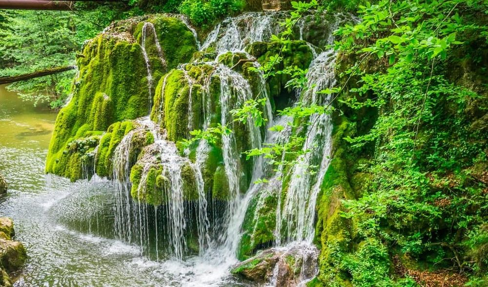

Descoperiți Cascada Bigăr - O bijuterie naturală ascunsă
Cascada Bigăr este o minunată creație a naturii, oferind o priveliște unică și încântătoare pentru vizitatori:
-

Priveliște panoramică - Minunea naturii
Această cascada unică își varsă apa peste o formațiune de calcar într-un mod spectaculos și încântător.
-

Împrejurimile naturale - Aventură în sălbăticie
Cascada Bigăr este înconjurată de frumuseți naturale, oferind oportunități excelente pentru drumeții și explorări.
-

Fotografii memorabile - Capturați frumusețea
Cascada și peisajul său oferă oportunități excelente pentru a captura imagini impresionante și amintiri de neuitat.
-

Natură abundentă - Bucurați-vă de liniște
Această destinație retrasă vă oferă oportunitatea de a scăpa de agitația urbană și de a vă bucura de liniște și frumusețe naturală.
Concluzii
Cascada Bigăr este o comoară naturală pe care o puteți descoperi într-un colț pitoresc al României.